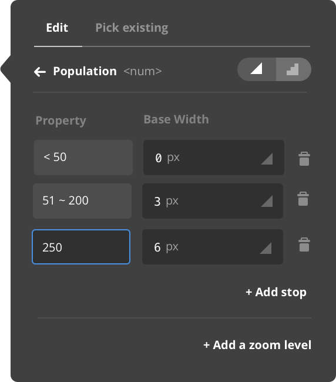
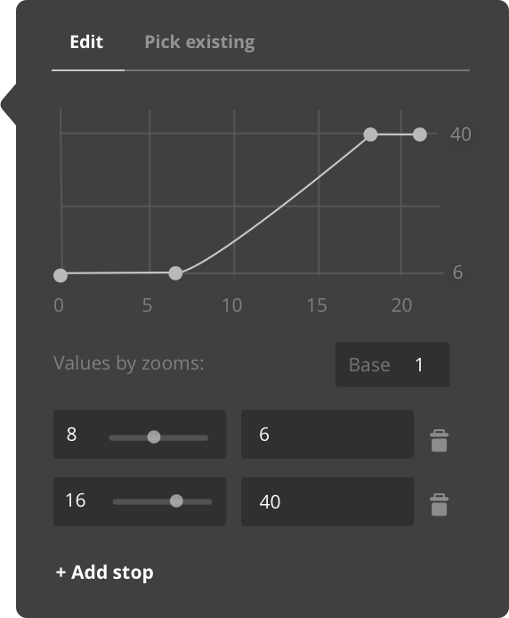
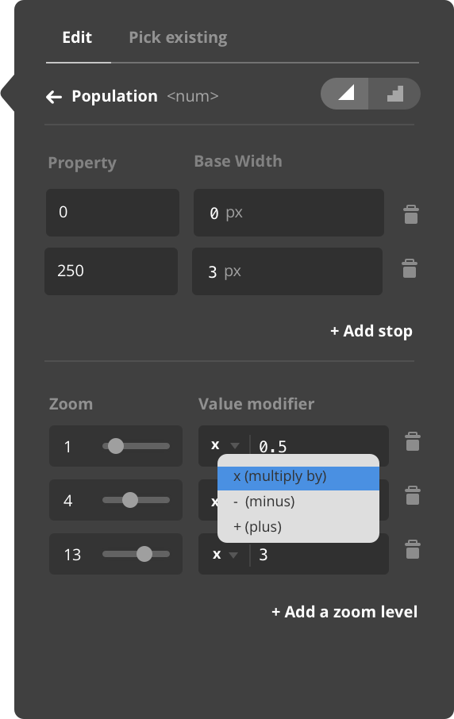
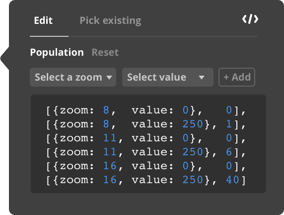

Small Project
Data-driven Styling
Data-driven styling represents the capacity in our map SDKs to change styles based on data properties. For example, change circle layer radius based on population density. When this feature was first introduced in Mapbox GL JS in June 2016, I experimented with some UI concepts to explore design options and inform future technical decisions.
Three types of property functions
There are three types of functions that comes with data driven styling, exponential, interval, and categorical.
Exponential
Generate an output by interpolating between stops.
'circle-color': {
'property': ‘level’,
'type': ‘exponential’,
'stops': [
[1, '#009900'],
[100, '#1666ff']
}199
Interval
Return the output value of the stop just less than the function input.
'circle-color': {
'property': ‘density’,
'type': ‘interval’,
'stops': [
[25, '#009900'],
[75, '#cc00ff'],
[100, '#1666ff']
}0
25
75
100
Categorical
Return the output value of the stop equal to the function input.
'circle-color': {
'property': 'type',
'type': 'categorical',
'stops': [
[‘low’, '#009900'],
[‘medium’, '#cc00ff'],
[‘high’, '#1666ff']
}Low
Meidum
High
Three types of property functions


Property and zoom functions
In addition to property functions (data-driven styling), Mapbox GL JS also provides the ability to style based on zoom levels. Zoom functions is a feature that's already included in the current Mapbox Studio. The real complexity comes when combining zoom functions with property functions.
Zoom
Radius increases as zoom level increases
'circle-radius': {
stops: [[8, 6], [16, 40]]
}6
z8
40
z16
Property
Radius increases as property ‘sqrt’ increases
'circle-radius’: {
property: 'sqrt',
stops: [
[0, 6],
[250, 40]
]
}6
40
z8
6
40
z16
Zoom and property
Radius increases as property ‘sqrt’ and zoom level increase.
'circle-radius': {
property: 'sqrt',
stops: [
[{zoom: 8, value: 0}, 3],
[{zoom: 8, value: 250}, 20],
[{zoom: 16, value: 0}, 6],
[{zoom: 16, value: 250}, 40]
]
}3
20
z8
6
40
z16
Property function and zoom function UI
Property function only
Zoom fucntion only
Zoom and property function

Complex value editing
The ability to style based on both zoom and property means maximum control and flexibility when styling base maps with complicated layer structures. It also means some new challenges for a learnable, simple UI. Below is a flow I sketched out to demonstrate the steps a user goes through to create a property and zoom function.
Function
What is the funciton type?
Zoom function
Adjust based on zoom level
Property function
What is the value type of the property?
String
String value allows for categorical functions
+
Categorical only
Simple value or add zoom function
Number
What type of property function?
+
Exponential, categorical, or interval
Simple value or add zoom function
Complex value editing
A table design with graphs

Value modifiers for zoom stops
Code editor for complicated values
Designing a UI for something that's essentially a programming expression was an interesting challenge. It is hard to reduce abstraction when there is so much flexibility that comes with code. Another constraint here is we are building this on top of the exisiting interface (primarily for base map design), not designing a visualzation editor from ground up.
Prototypes
I used prototypes to better communicate user flows.